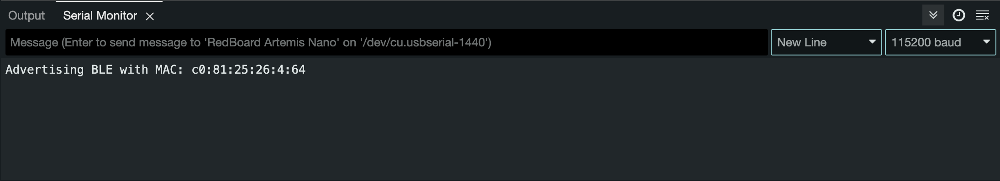
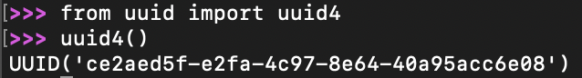
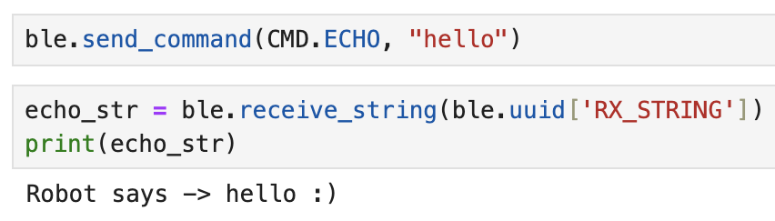
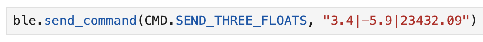
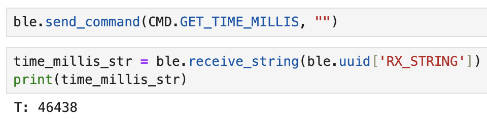

Lab 1: Artemis & Bluetooth
01.21.2025 - 01.28.2025
Objective
Lab 1 is split into two parts, 1A and 1B. The overall objective of this lab was to set up and familiarize myself with the Arduino IDE and the Artemis board. Lab tasks included programming the board, reading & writing serial messages over USB, using the onboard temperature sensor and microphone, and communicating between my computer (Jupyter notebook) and the Artemis board through Bluetooth.
Lab 1A
I first installed Arduino IDE and made sure that it was updated to the most recent version. I also followed the set up instructions to install the correct board and libraries. After hooking up the Artemis board to my computer and selecting the correct Board and Port, I moved on to the tasks.
Example 1: Blink
The first example code we ran was blink, which made the LED on the board to turn on and off. I was able to upload and run the code with no issues. You can see the board executing the program below:
Example 2: Serial
I then uploaded and ran the next example, Serial. This code allowed me to type characters in the Serial monitor and then receive the same input characters as outputs, also in the Serial monitor.
Example 3: Analog Read
The third example file was analogRead, which utilized the on board temperature sensor. The temperature measurements were outputted to the serial monitor, and I tested the sensor by holding the board in my hand to warm it up. As seen in the video below, the temperature did increase when I held the board.
Example 4: Microphone Output
The last example had me test the microphone on the Artemis board. The frequency measurements were outputted to the Serial Monitor. I tested whistling, and the frequency increased accordingly.
Blink & Microphone (additional task for 5000-level students)
I also decided to do the graduate level task, which was to create a program that would make the Artemis board blink the LED only when it detected a musical “C” note. I did this by creating a new file, and referencing the Blink and Microphone Output examples to run the blink code only when the detected frquency was in the "C" note range. The code for this task can be seen on the github repository (link).
Lab 1B
I first read through the set up instructions and made sure my Python and pip versions were correct. I also made a virtual environment, installed the necessary packages, and installed the Arduino BLE library. Finally, I downloaded the provided codebase and worked on the tasks using Jupyter lab.
I first followed the instructions to get my MAC address, after which I updated the artemis_address in connections.yaml accordingly. The other set up step was generating a UUID, and updating connections.yaml and ble_arduino.ino.
 Task 1: ECHO
The first task was to program the board so that I could send a string from my computer to the board using ECHO. The board would then send back to the computer an augmented string."
I added the arduino code below to make the board return the user's string when the ECHO command is used.
case ECHO:
char char_arr[MAX_MSG_SIZE];
// Extract the next value from the command string as a character array
success = robot_cmd.get_next_value(char_arr);
if (!success)
return;
tx_estring_value.clear();
tx_estring_value.append("Robot says -> ");
tx_estring_value.append(char_arr);
tx_estring_value.append(" :)");
tx_characteristic_string.writeValue(tx_estring_value.c_str());
Serial.print("Sent back: ");
Serial.println(tx_estring_value.c_str());
break;
Below, you can see the Python end of ECHO, which send the command to the board, and then receives a string back.
Task 2: SEND_THREE_FLOATS
The next command I completed was SEND_THREE_FLOATS, which would allow me to send three floats from my computer to the artemis board. For the Arduino code, I referenced SEND_TWO_INTS, which was already implemented, and changed the implementation accordingly. Below, you can see the Python code to send the floats, and the Serial Monitor.
Task 3: GET_TIME_MILLIS
This task was to get the current time from the Artemis board and return it as a String to the computer.
This Arduino code below uses the millis() method to get the time.
case GET_TIME_MILLIS:
tx_estring_value.clear();
tx_estring_value.append("T: ");
tx_estring_value.append(int(millis()));
tx_characteristic_string.writeValue(tx_estring_value.c_str());
Serial.print("Sent back: ");
Serial.println(tx_estring_value.c_str());
break;
And the Python end is shown below.
